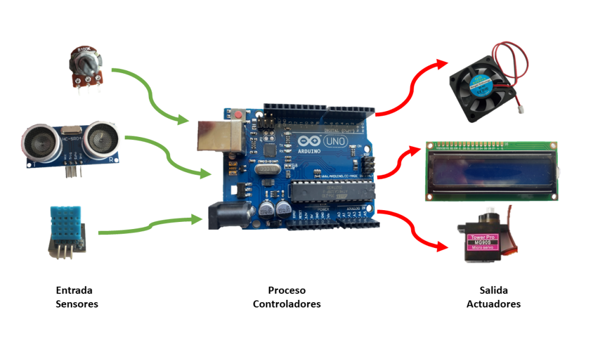

Qué es Arduino
Arduino es una plataforma electrónica de código abierto que permite crear proyectos capaces de recibir información del entorno, procesarla y realizar acciones.
Una placa Arduino contiene un microcontrolador, que podemos programar para indicarle qué debe hacer.
Podemos conectar diferentes componentes como luces led, sensores de temperatura, sensores de distancia, motores, pulsadores entre otros.
La placa recibe información a través de sus entradas, procesa esa información mediante un programa y puede enviar órdenes a sus salidas.
Qué función cumple en la nave
Dentro de nuestra misión, Arduino es el cerebro de los sistemas automáticos de la nave.
La nave cuenta con diferentes dispositivos que necesitan comunicarse entre sí. Arduino recibe información de los sensores, la interpreta siguiendo las instrucciones de un programa y controla diferentes dispositivos para producir una respuesta.
Por ejemplo, el sistema de control de temperatura funciona así:
- Arduino recibe la información del sensor
- Arduino analiza el valor
- Segun el valor Arduino envía señal al motor
- El motor activa el sistema de ventilación
"Sin nuestro controlador, los sensores podrían detectar problemas, pero no tendríamos quién tome decisiones y controle los dispositivos de la nave."
Esquema del sistema
